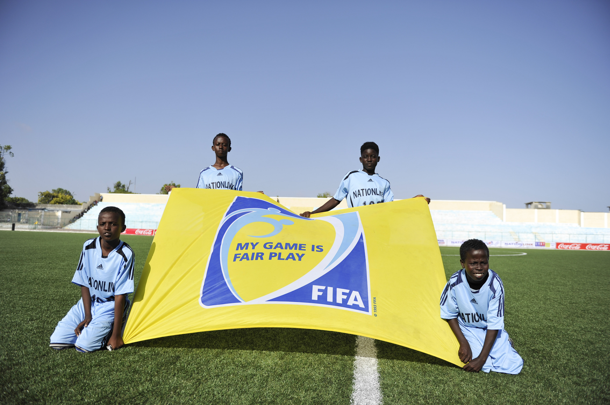

A fair play (magyarul kb. sportszerűség) a tiszta eszközökkel játszott mérkőzés és az ellenféllel szemben tanúsított sportszerű magatartás eszméje. A fair play egyszerre jelenti a szabályok, az ellenfél, a bíró döntéseinek, a közönség, valamint a játék szellemének tiszteletét, a csapatszellemet, a lojalitást, valamint az önérzetet a győzelemben éppúgy, mint vereség esetén.
A kifejezés az angol fair (becsületes, korrekt, tissztességes) és play (játék, játszma) szavakból ered, de manapság az egész világon elterjedten használják, nemcsak a sportban, hanem az élet más területén is.
A játék tisztasága, szépsége érdekében a FIFA 1988-ban tartott 46. kongresszusán meghirdette a sportszerűségi kampányát. Jelszava: A labdarúgás sportszerűség, sportszerűség a labdarúgás.
Az első főpróba az Olaszországban rendezett XIV., az 1990-es labdarúgó-világbajnokság döntő helyszínén volt. Ezen a tornán a sportszerűséget állították a középpontba. Minden mérkőzésen lobogtatták a hatalmas sárga zászlókat - Fair play please! (Kérjük legyenek sportszerűek!) - felirattal. Betartását elsősorban a játékvezetőktől követelték meg, azzal az indoklással, hogy a világbajnokság sportszerű lebonyolításának kulcsa a játékvezető kezében van. Abban az esetben, amikor a csapatok jó partnereknek bizonyultak, és a játékvezető is értette a dolgát, felcsillant a labdarúgás minden szépsége.
